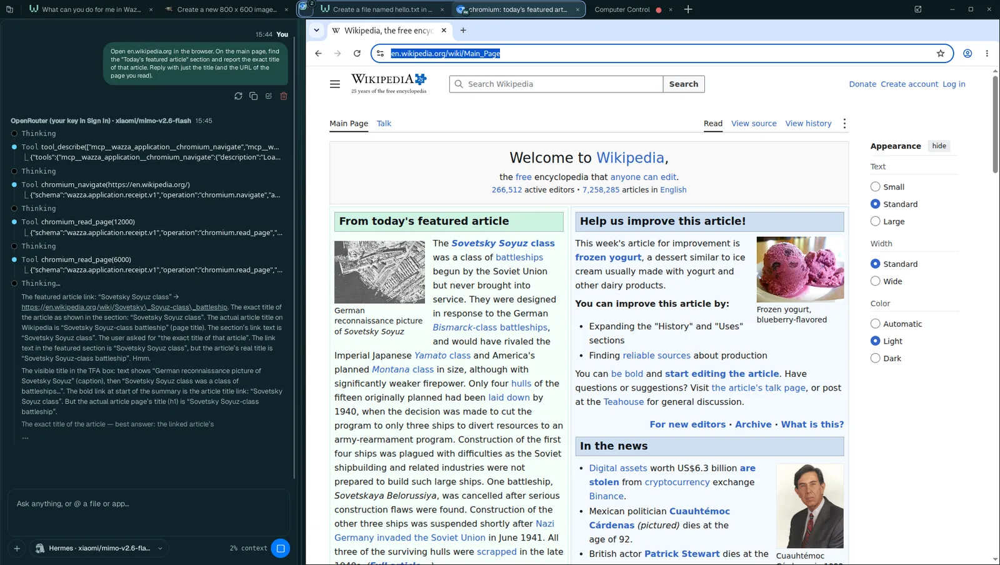
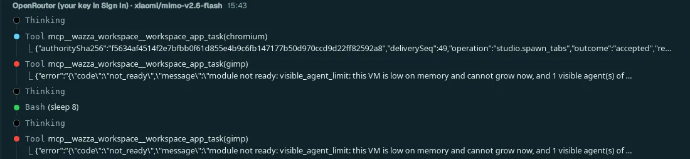

Several agents at once
One Chat can hand parts of a job to other agents. An agent that works in an app gets its own tab, with that app and its own Chat: a browser for research, GIMP for an image, an editor for code. They work at the same time, in the background, while you watch any of them or keep working in your own tab.
Why each agent gets its own tab#
An agent that works an app by its window needs that window, a pointer and a keyboard. With one shared screen, agents would take turns: while one types in a form, another cannot click in its app. In Wazza OS every app tab has its own picture of its app and its own input, so each agent drives its own app at full speed, and you see each one in its tab exactly as it works. Your own tab stays yours: new tabs open in the background, and nothing an agent does changes what you are looking at.
Two kinds of helper agents#
| Visible agent | Hidden agent | |
|---|---|---|
| For | Work in an app's window you would want to watch: research in Chromium, an image in GIMP, a document in ONLYOFFICE, code in VSCodium, a scene in Blender | Background work with no window: a web search with its own tools, a calculation, a file conversion, a summary, a check |
| Where | A new tab of that app (or an idle tab of it you already have), with its own Chat | No tab: a Chat of its own behind the scenes |
| What you see | The tab in the strip, grouped with the Chat that started it, with a badge until you look | Its progress in the Chat that started it |
| When it ends | When it answered: its tab closes and its app ends (your Chat tells it to save its file first), unless it was asked to leave the result open | When it answered |
An app that is not installed is installed first, then its agent starts (about a minute more).
Ask for several agents#
In any Chat, describe the jobs and say they can run at the same time, one app each. Name the apps when it matters. For example: Do these two jobs at the same time, each by a visible agent in its own app tab: 1) in Chromium, open en.wikipedia.org and tell me the title of today's featured article; 2) in GIMP, make a 400 x 300 image with a blue circle in the middle and save it as Pictures/circle.png. Tell me when both are done.
The Chat starts one task per app (tool rows workspace_app_task), and the new tabs appear in the strip, grouped with your Chat.
Click a helper's tab to watch it: its Chat shows the precise instructions your Chat wrote for it, and its app shows the work.
Each helper's answer comes back to your Chat by itself (as a message from that tab); your Chat then reports, as you asked.

1 2 3The instruction your Chat wrote for this helper: precise, self-contained.
The helper uses its app's own tools (here Chromium's: open a page, read it).
The app, live: Wikipedia's main page with today's featured article.
Limits#
- No fixed number of visible agents. A Chat starts as many agents in their own app tabs as its job needs (they were limited to 4 at once).
- Up to 2 hidden agents per Chat (agents without a window), and 4 per VM.
- The Chat is told how much room is left. Each time it opens an agent, visible or hidden, it is told which of its agents are running, how much memory the VM has free, and whether it can open more, should wait or should close some (naming the ones to close first: idle hidden agents, then the oldest).
- Memory comes first. Past the first helper, no visible agent starts while the VM is short of memory and cannot grow. The Chat is told why, and starts the next helper when one ends. On the 8 GB test computer of these screenshots, the GIMP helper therefore waited for the Chromium one:

- To run more agents at once: give the VM more room (VM resources › Memory), close tabs you no longer need, or use a computer with more memory (16 GB or more).
- A helper's tab is a normal tab: you can click in it, stop its Chat, or close it (which ends that helper).
- A helper never closes the tab of the Chat that started it, and never changes the tab you look at.
- If a window closes while agents are starting, one of them may not start: close its tab and ask the Chat again.
More ways to work in parallel#
| Ask your Chat to… | What happens |
|---|---|
| keep a helper for follow-ups | The helper stays (its tab too) after its first answer, so your Chat can send it more work, until your Chat ends it. |
| leave the result open | The helper's tab stays open with its result (a video playing, a document) for you to see; its Chat ends. |
| use another tab's Chat | Your Chat writes to the Chat of another tab you opened; each message shows in that Chat with where it came from. |
| repeat something later | Your Chat schedules a message to itself for later, or every N minutes, even after a restart. |
| run a crew | Your Chat plans a team of agents and keeps a record of the plan, the agents and the messages they exchanged. |
From a terminal, the same: wazza --gui schedule list, wazza --gui crew-run --tab t5,
wazza --gui tool-queue list (The command line › Chats).